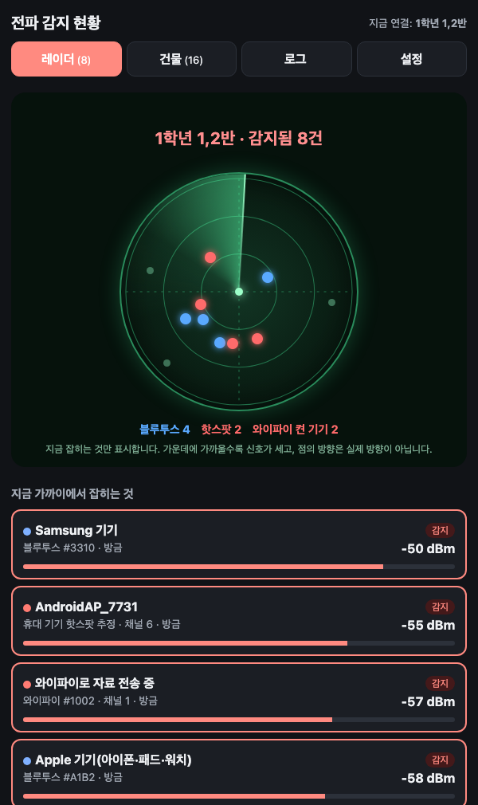
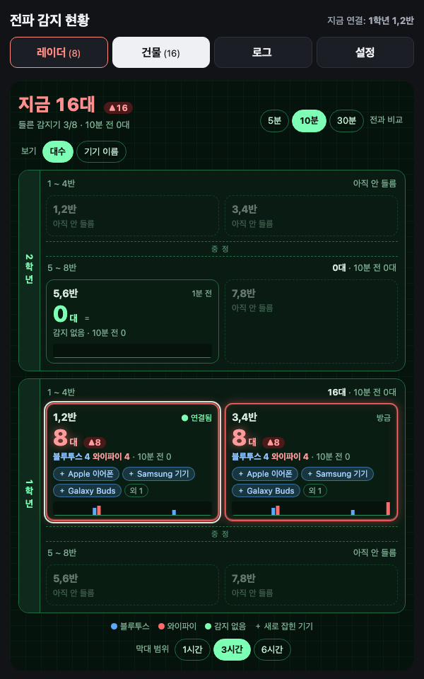

교실 전파 감지기(bt-scout) · 2026년 11월
바로 시작하기
필요한 것: Pico 2 W(또는 2 WH) 1개와 USB 케이블. LED는 선택입니다. 이것만으로 감지와 대시보드까지 돌려 봅니다. 10~15분이면 됩니다.
아직 실물에서 돌려 보지 않은 프로그램입니다
감지기 1대에서는 실제 부품으로 확인했고, 여러 대 동시 사용과 정밀 탐색은 컴퓨터에서 가상 자료로만 확인했습니다. 안 되는 곳이 있으면 Thonny 아래 창에 나오는 붉은 글씨를 그대로 알려 주세요.
1. 꽂기
- 피코를 Grove 쉴드에 꽂습니다(USB 방향을 쉴드의 USB 표시에 맞춤). 쉴드 스위치는 3V3.
- (선택) LED가 있으면 쉴드의 D16에 꽂습니다. 없으면 이 단계를 건너뜁니다.
LED는 필수가 아닙니다
피코 본체의 작은 초록 LED가 똑같이 움직입니다. 그것만 보고 진행해도 됩니다.
2. MicroPython 넣기 (처음 한 번)
- micropython.org → Download → Raspberry Pi Pico 2 W의 최신
.uf2를 받습니다. ("2"와 "W"가 둘 다 있는 것) - 피코의 BOOTSEL 단추를 누른 채 USB를 컴퓨터에 꽂습니다.
- 나타난
RP2350드라이브에.uf2를 끌어다 놓습니다. 드라이브가 사라지면 끝입니다.
3. 파일 4개 넣기
- Thonny(thonny.org)를 열고 오른쪽 아래에서 MicroPython (Raspberry Pi Pico)를 고릅니다.
- 보기 → 파일을 켜고, "이 컴퓨터" 칸에서
bt-scout/firmware로 들어갑니다. main.py,detect.py,config.py,page.html을 각각 오른쪽 단추 → /에 업로드.- 피코 쪽
config.py를 열어AP_PASSWORD를 8자 이상으로 새로 정하고 저장합니다. 나머지는 그대로 둡니다. - USB를 뽑았다 다시 꽂습니다(충전기나 보조배터리도 됩니다).
GRADE = 1 # 학년 CLASSES = "1,2" # 맡은 두 반. 그대로 두면 "1학년 1,2반" 자리에 나옵니다 AP_SSID = "SCOUT" # 와이파이 이름 AP_PASSWORD = "12345678" # 기본값. 꼭 바꾸세요 LED_TYPE = "single" # LED 10개 막대(RGB LED Stick)면 "stick"
4. 보기
- 10초 기다립니다. LED 줄의 첫 칸이 초록으로 켜지면 정상입니다. (피코 본체의 작은 LED는 3초마다 반짝입니다.)
- 휴대전화의 블루투스를 끄고 와이파이
SCOUT에 붙습니다. "인터넷 없음"이 나오면 연결 유지. - 사파리나 크롬 주소창에
192.168.4.1. - 레이더가 돌아가는 화면이 뜹니다. 다른 전화나 이어폰의 블루투스를 켜고 가까이 두면 10초쯤 뒤 레이더에 점이 켜지고 LED가 계속 켜집니다.


위 화면은 컴퓨터에서 가상 자료로 띄운 예시입니다.
5. 화면 읽는 법
| 탭 | 뜻 |
|---|---|
| 레이더 | 지금 연결된 감지기가 잡는 기기. 가운데에 가까울수록 신호가 셉니다. 파랑은 블루투스, 빨강은 와이파이, 흐린 점은 약하거나 확인 중인 신호. 방향은 실제 방향이 아닙니다. |
| 건물 | 감지기 여러 대의 현황을 학년·반 위치대로. 반별 대수, n분 전과의 비교, 새로 잡힌 기기 이름. "기기 이름" 보기로 바꾸면 위치별 이름만 봅니다. 지금은 1대뿐이라 한 칸만 채워집니다. |
| 로그 | 조금 전까지 잡히던 기기와 감지 기록(언제, 무엇이, 몇 분 동안). |
| 설정 | 감지 세기 기준, 기준 측정(빈 교실에서만). |
6. 꼭 지킬 것
확인하는 기기의 블루투스는 끕니다
켜져 있으면 그 기기가 감지됩니다.
기준 측정은 빈 교실에서만
사람이 있을 때 누르면 그 자리에 있던 기기가 "원래 있던 것"으로 기억되어 감지되지 않습니다.
기록은 전원이 꺼지면 사라집니다
감지기 안에는 최근 6시간만 메모리에 있습니다. 휴대전화에 모은 기록은 "기록 지우기"를 누를 때까지 남습니다.
초록이라고 기기가 없는 것은 아닙니다
꺼진 기기, 블루투스를 끈 기기, 이동통신만 쓰는 기기는 보이지 않습니다.
7. 다음 단계
- 8대로 늘릴 때: 감지기마다
GRADE(1, 2)와CLASSES("1,2" "3,4" "5,6" "7,8")만 바꿉니다. 와이파이 이름과 암호는 모두 같게 둡니다. 「① 피코 편」 7장. - LED 10개 막대가 오면: D16에 꽂고
LED_TYPE = "stick". - ESP32가 오면: 「② ESP32 편」.
- 코드 한 장짜리로 가볍게 해 보려면:
simple/main.py하나만 넣습니다(LED 10개 막대 전용, 화면 없음).